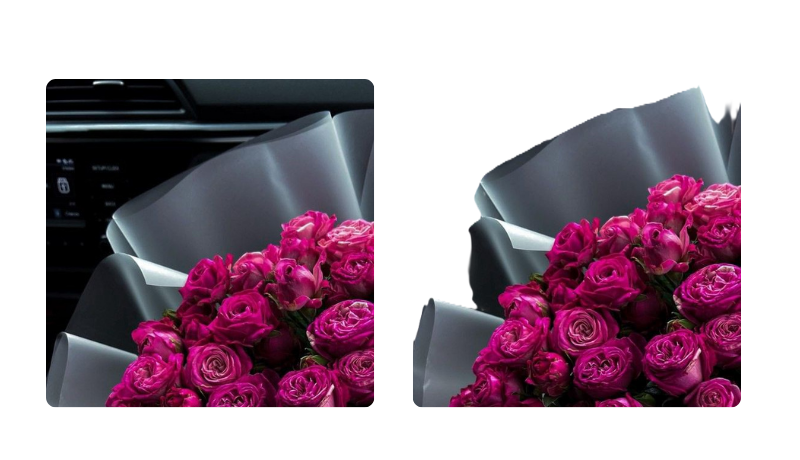
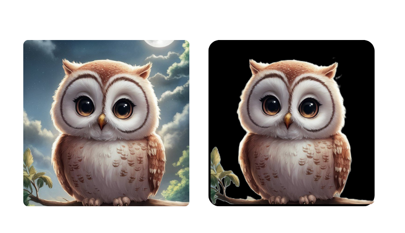
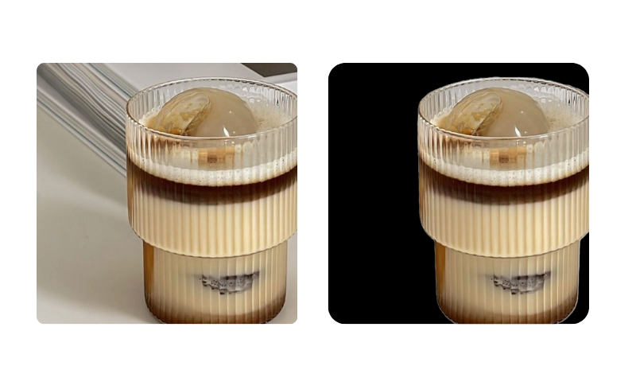

مرحباً بك في معرض الأعمال الخاص بخدمتي لإزالة خلفيات الصور!
هون رح تقدر تشوف أمثلة حقيقية من شغلي، وتشوف الفرق الواضح بين الصورة الأصلية والصورة بعد التعديل.
استخدام الصور بعد إزالة الخلفية
بعد إزالة الخلفية، الصور بصير فيها استخدامات كثيرة! شوف بعض الأمثلة:
صور منتجات جاهزة للعرض على المتاجر الإلكترونية (Amazon، Instagram، Shopee...)
صور شخصية بخلفيات جديدة (مثالية للبروفايلات أو السوشال ميديا)
تصميم بسيط باستخدام الصور المعدلة (بوستر، كوفر، إعلان)
أنواع الصور اللي بشتغل عليها
أنا بشتغل على مختلف أنواع الصور، منها:
صور منتجات
صور شخصية
صور لحيوانات
لوجوهات ورسومات
صور للطباعة أو التسويق الإلكتروني
👈 قبل وبعد
شوف الفرق بين الصورة الأصلية قبل وبعد إزالة الخلفية:



شو بتشمل الخدمة؟
إزالة خلفية الصورة بدقة
خلفية شفافة أو بلون معين حسب الطلب
إمكانية تعديل الإضاءة أو تغيير الخلفية
استخدامات الصور بعد التعديل
الصور الجاهزة بتكون مثالية للمتاجر، الإعلانات، التصاميم، أو حتى للبروفايل الشخصي.